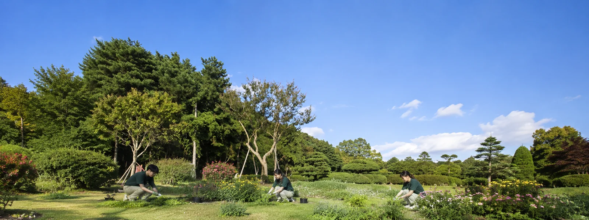
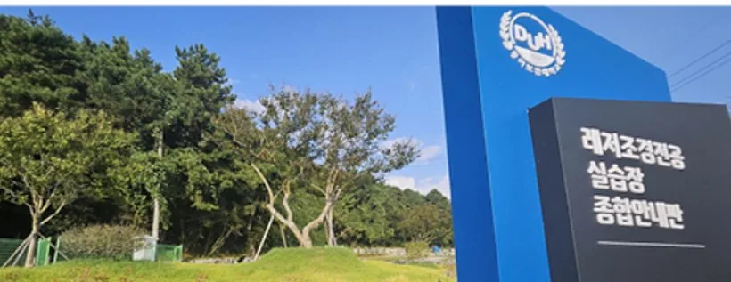
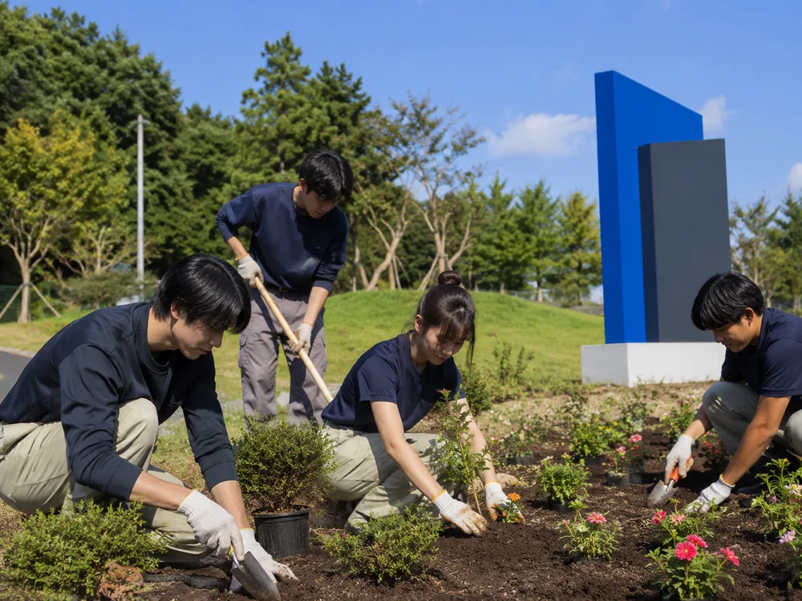
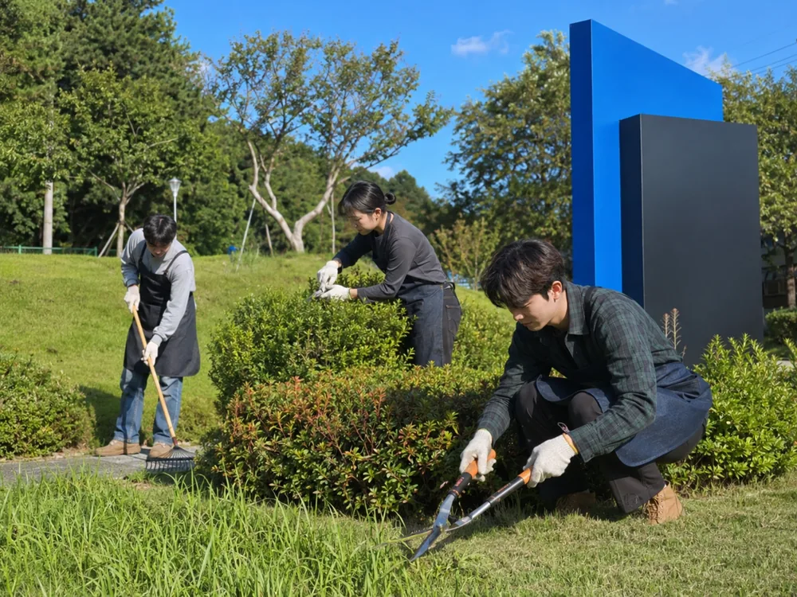
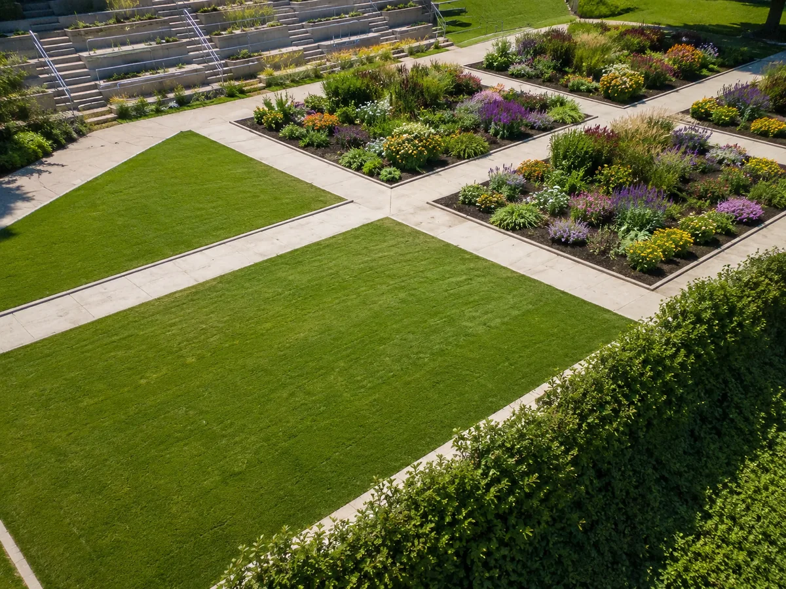

전공 소개
조경 기초이론과 현장 중심 교육으로 실무형 전문 기술인을 양성합니다.
레저조경전공은 조경 기초이론과 현장 중심 교육을 바탕으로, 실무 역량을 갖춘 레저·조경 산업 전문 기술인을 양성합니다. 인성과 전문 지식을 기반으로 창의적 문제해결 능력을 갖춘 융·복합형 인재를 배출하며, 4차 산업혁명 기술과 생태적 가치, 문화적 감수성을 융합하여 도시와 환경의 지속가능한 미래를 선도하는 레저·조경 전문 인재를 육성합니다.
스마트 드론 측량, 조경 캡스톤디자인, 정원설계 스튜디오 등 현장·실습 중심 교육과정을 운영하며, 조경·원예·드론 분야의 다양한 자격증 취득을 지원합니다.
취득 가능 자격증
재학 중 조경·원예·드론 분야 자격증 취득을 지원합니다.
- 조경 분야 조경기능사 · 조경산업기사 · 자연생태복원산업기사
- 원예 · 식물 원예기능사 · 시설원예산업기사 · 식물보호산업기사 · 유기농업산업기사
- 정원 · 골프 그린키퍼 · 골프코스관리자 · 정원 관련 자격증
- 드론 드론 자격증(1~4종)
졸업 후 진로
조경 산업체
조경수목관리업체 · 종합조경업체 · 실내조경업체 · 환경복원업체 · 조경설계사무소 · 조경기술사사무소
공공 · 행정
시설관리공단 · 공원녹지 및 조경 관련 공무원
정원 기관
국가정원 · 지방정원 · 민간정원 등 정원 관련 기관
골프 산업
골프장 조경관리직 · 골프시설관리 · 골프 관련 산업체
교과과정
1~2학년 주요 교과목입니다.
| 학년 | 1학기 | 2학기 |
|---|---|---|
| 1학년 | 조경학개론 · 잔디학개론 · 조경수목학 · 기초식물학 · 잔디관리실습Ⅰ · 스마트식물보호및조경관리 · 교양과인성 | 식물생리학 · 조경드로잉실습 · 조경실무이론 · 잔디학개론Ⅱ · 잔디관리실습Ⅱ · 드론기초과정 · 전공과자기개발 |
| 2학년 | 스마트환경분석 · 정원식물학Ⅰ · 정원설계스튜디오Ⅰ · 잔디병리학 · 토양비료학 · 조경실무실습 · 드론운용 | 조경캡스톤디자인 · 골프코스관리학 · 잔디연구방법론 · 정원설계스튜디오Ⅱ · 정원식물학Ⅱ · 스마트조경그래픽 · 스마트드론측량 |
교수진
| 성명 | 담당 교과목 | 연락처 |
|---|---|---|
| 석영선 전공주임교수 | 학과 업무 총괄 · 스마트환경분석 · 조경관리학 · 식물학/수목학 | 061-470-1696 ysseok@duh.ac.kr |
| 정경진 교수 | 조경학 · 스마트식물보호및조경관리 · 토양비료학 | 061-470-1708 gjjeong@duh.ac.kr |
| 곽병희 교수 비전임 | 화훼 · 정원식물 | — |
| 김선화 교수 비전임 | 정원설계스튜디오 · 식물학/수목학 | — |
| 김일주 교수 비전임 | 드론기초 · 드론운용 | — |
| 편자미 교수 비전임 | 잔디관리 · 조경실무 | — |
전공 사진




레저조경전공 외국인 유학생 입학 문의는 국제교류원 061-470-1700 (ARS 7번) 또는 입학·등록 안내를 확인하세요.